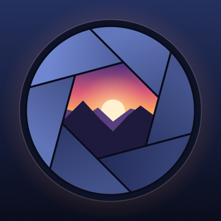
Features
Everything Fieldkit can do
Fieldkit is a set of tools for digital landscape photographers. It works out exposures, ND filter times, sharp stars and depth of field, and plans the light: golden and blue hour, the Milky Way, the moon, and the sun's and moon's paths across the sky. Everything is calculated on your iPhone, so it works without signal.
Getting around
- Your tab bar. Pick your four favourite tools for the tab bar in Tools → Customize Tab Bar. Out of the box they are Calculator, ND Filter, Golden Hour and Meter.
- Tools. The last tab always lists every tool, plus the Guide, My Gear and Customize Tab Bar.
- Help on every screen. Tap ? at the top of any tool to see how it works. The full Guide (Tools → Guide) explains every tool, the key ideas behind them and some tips.
- Offline. No account, no internet connection needed, nothing collected. See the privacy policy.
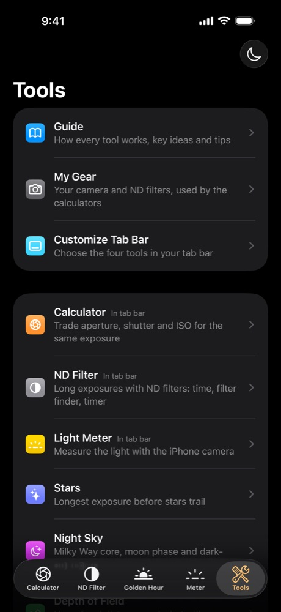
My Gear
Set up your camera and filters once. Every tool uses them.
- Camera: sensor size (full frame, APS-C, APS-C (Canon), Micro Four Thirds or medium format) and resolution. Stars and Depth of Field depend on them.
- Camera limits: lowest and highest ISO and fastest shutter speed. The calculators then only offer settings your camera actually has.
- My ND filters: the filters you own. They're offered first wherever you add a filter, and Find filter suggests from them.
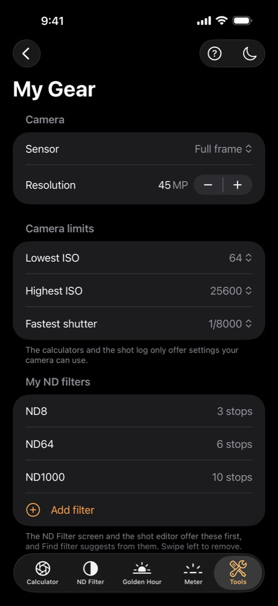
Calculator
Trade aperture, shutter speed and ISO without changing how bright the photo is.
- Enter the settings your camera's meter suggests under Metered exposure.
- Under New exposure, choose what to Solve for (aperture, shutter or ISO) and set the other two as you like.
- The answer is rounded to a value your camera can actually dial in. If that rounding changes the brightness noticeably, the difference is shown, for example “+0.3 EV vs. metered”.
- Choose ⅓, ½ or full-stop Dial increments to match your camera.
- Results over 30 seconds show the exact time with a hint to use Bulb mode. Settings outside your camera's range get a warning.
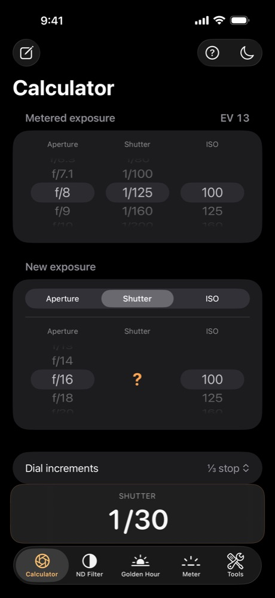
ND Filter
Long exposures with neutral density filters: how long, which filter, and a timer.
- Calculate: set your metered shutter speed (without the filter), add the filters you're using, and get the exposure time. Stacked filters add up. Presets run from ND2 to ND1000 and ND32768 (15 stops).
- Find filter: pick a goal (silky water, glassy or misty water, streaky clouds, or emptying a busy street) or set your own target time, and Fieldkit suggests the filter or stack that gets closest, from the filters you own (or the common presets, if you haven't added any in My Gear). Tap Use to load a suggestion into Calculate.
- Timer: start it when you open the shutter. You're notified when to close it, even with the phone locked.
- Lock Screen, Dynamic Island and Apple Watch: the countdown shows there too, so you don't need to keep the app open.
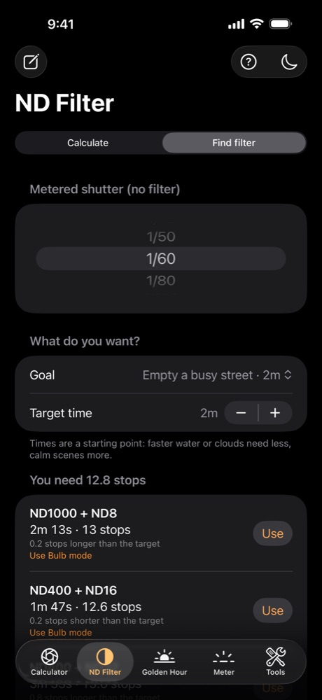
Light Meter
Use the iPhone camera to measure how bright the scene is.
- Shows the scene brightness as EV at ISO 100. Tap the preview to meter the area around that point.
- Sky and Foreground: store a reading of each to get advice for bright skies: the graduated ND filter strength to use, or how many bracketed shots to take and how far apart.
- Use in Calculator sends the reading over. It keeps your aperture, works out the shutter speed, and changes the ISO if the scene is too dark or too bright for your camera.
- Calibration (±3 EV) lets you match the readings to your camera's meter.
Stars
The longest exposure before stars start to trail, for Milky Way and night-sky photos.
- Set the focal length and aperture. Your sensor and resolution come from My Gear.
- Max shutter uses the NPF rule, which accounts for your sensor's pixels, rounded down to a shutter speed you can dial in. The older 500 rule is shown for comparison.
- Starting ISO gives a first test shot for a dark, moonless sky.
- When is the Milky Way up? jumps to Night Sky.
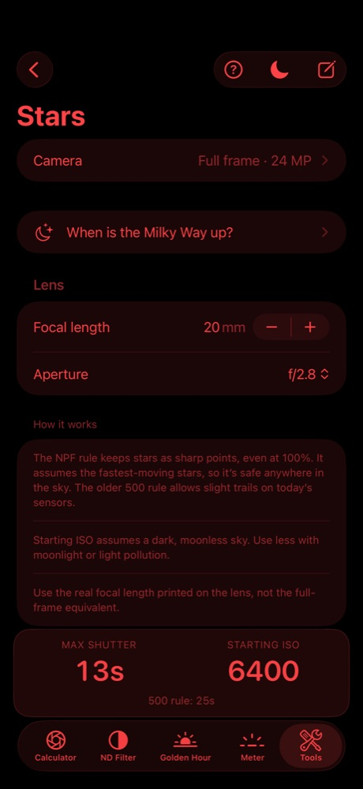
Night Sky
Plan Milky Way photos: when the core is up, where to look, and what the moon is doing.
- A rating for the night: excellent, good, moon interferes, or core not visible.
- Milky Way core: when it's visible, its best moment, how high it gets and which direction to face.
- Moon: phase and illumination, and when and where it rises and sets.
- Darkness: when the sky is fully dark, or how dark it gets on summer nights that never get fully dark.
- Darker nights ahead: the best nights in the next 30 days. Tap one to see it.
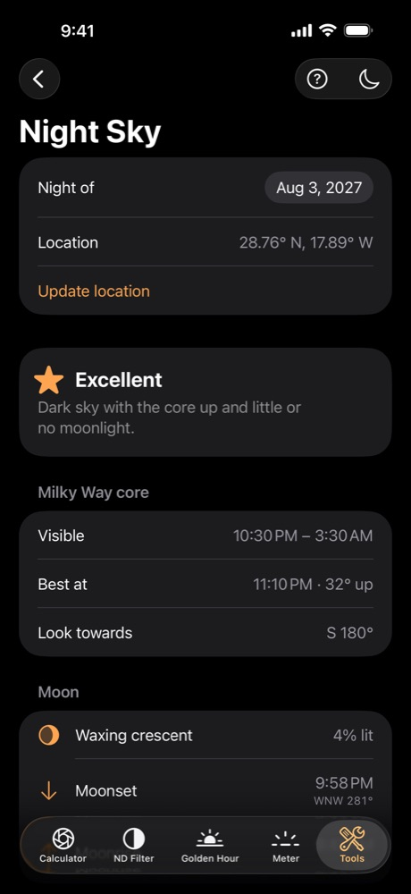
Depth of Field
Get everything sharp from the foreground to the horizon.
- Set the focal length and aperture. Your sensor comes from My Gear.
- Hyperfocal shows the focus distance that keeps the most in focus. Focus at hyperfocal distance sets it in one tap, or use the slider to pick your own focus distance.
- Sharp from shows the near and far limits, so you can check your nearest foreground object is inside the sharp zone.
- Distances are in metres, or feet in the US.
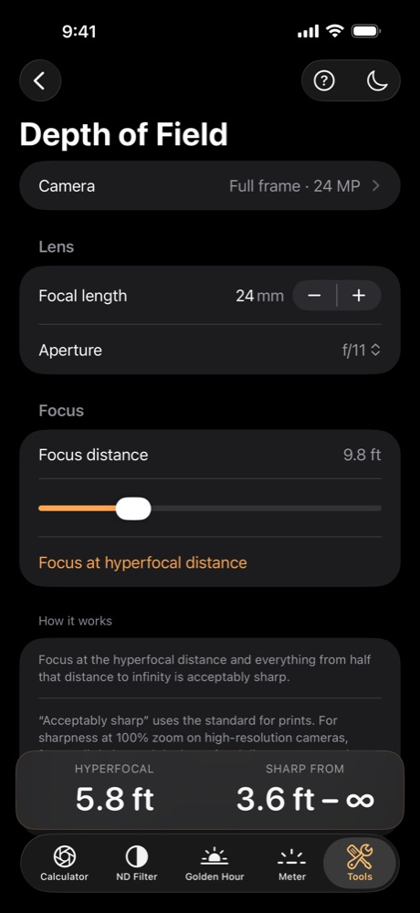
Golden Hour
Plan your shoot around the best light of the day.
- Blue hour, golden hour, sunrise and sunset for any date, morning and evening, at your location.
- Sunrise and sunset show the compass direction, so you know where to stand.
- Your last location is remembered and the times are worked out on the phone, so it works without signal. Days when the sun never sets, or never rises, are handled too.
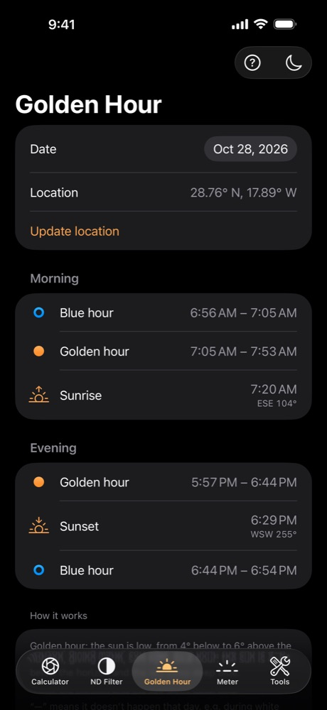
Sun & Moon
See where the sun and moon are, and where they'll be, through your camera.
- Camera: hold the phone up and the day's paths are drawn over the live view, with hour marks. Golden hour is thick and orange, blue hour dashed; the moon's path is dotted. Sunrise and sunset are marked on the horizon.
- Chart: a flat sky map with north at the top, which doesn't need the camera.
- Drag the time slider or pick a date to see where they'll be; tap Now to come back.
- Line up with the sun (or the moon at night) corrects the compass in one tap. Compass correction can also be adjusted by hand.
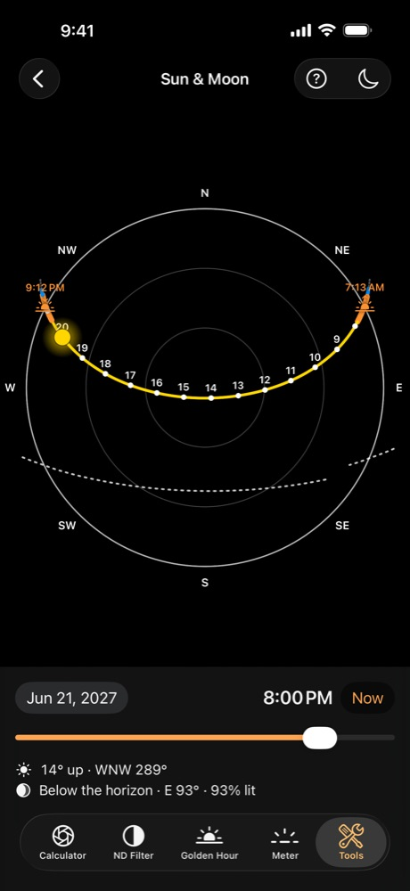
Shot Log
Keep a record of your shots, to learn what worked.
- Tap the pencil button on the Calculator, ND Filter or Stars screen and that screen's settings are filled in for you: the exposure from the Calculator, the shutter and filters from ND Filter, or the exposure and focal length from Stars.
- Add a note. The place is saved too, if you allow location, and shown on a small map.
- Shots are grouped by day. Tap one to edit it, or swipe left to delete it. You can also add a shot by hand.
- Your log stays on your iPhone.
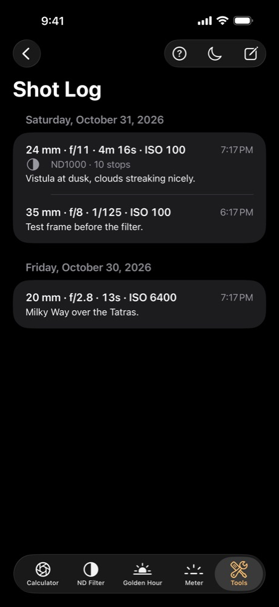
Night mode
Keep your night vision while you shoot in the dark.
- Tap the moon button at the top of any tool. The whole app turns red and the screen dims, and it goes back to your normal brightness when you turn it off.
© 2026 Grzegorz Pluta